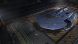

Max jump (engineered)
~78 LY
A top-tier dedicated explorer and one of the finest deep-space ships in the game. Its class-8 FSD and fourteen optional internals deliver huge jump range alongside module space and comfort no other explorer approaches — the right hull for the longest, most ambitious expeditions. Trades pad flexibility and a steep price for flagship capability.

This ship's 1–100 suitability rating reflects its fully-engineered fit for this role, scored against every ship in the role. See how ships are rated.
The Caspian Explorer is Saud Kruger's dedicated deep-space flagship — a large hull designed from the ground up for exploration rather than adapted from a freighter or warship. A class-8 FSD on a purpose-tuned airframe delivers a huge jump range, while fourteen optional internals and six utility mounts give it module space and comfort no other explorer approaches.
That space is the point. The Caspian carries the largest fuel scoop, the biggest SRV bays, multiple AFMUs, deep passenger or science fittings and every comfort an expedition could want, with room left over — all while jumping ~78 LY. It's a large pad and a major investment, so it's the explorer you graduate to when you want the galaxy delivered in flagship comfort. For long, ambitious, fully-equipped expeditions, little compares.
Flagship-scale exploration: the longest and most ambitious expeditions, carrier-based deep-space operations, large-scale exobiology and science runs, and luxury deep-space tourism where comfort and capacity matter as much as range.
Four things make the Caspian the flagship explorer:
It's a large pad, so it can't land at outposts — resupply means orbital stations, planetary ports or a fleet carrier. It's slow, ponderous to manoeuvre, and at ~189M Cr a major investment to buy and outfit. The Caspian's case is flagship capacity and comfort; for pad flexibility and value, a Krait Phantom or Mandalay is the smarter buy.
Both tables rate ships for exploration specifically. The role column is the maximum engineered jump range in light-years — the headline number for deep-space travel.
| Ship | Class | Max jump (LY) | Pros & cons vs Caspian Explorer | Rating |
|---|---|---|---|---|
| Caspian Explorer this | Large | ~78 | — this hull (baseline) | 94 |
| Anaconda | Large | ~78 | Comparable range; cheaper; also combat-capableLess purpose-built comfort; fewer utilities | 94 |
| Imperial Clipper | Large | ~45 | Far faster; cheaperMuch shorter range; less capacity | 66 |
| Beluga Liner | Large | ~40 | Luxury passenger comfortShort range; passenger-first | 58 |
Among large explorers the Caspian and the Anaconda are the two flagships. The Anaconda matches its range, costs less and fights too; the Caspian counters with purpose-built comfort, more utilities and unmatched dedicated-explorer capacity. Choose the Caspian for the finest pure-exploration voyage, the Anaconda for versatility and value.
| Ship | Class | Max jump (LY) | Pros & cons vs Caspian Explorer | Rating |
|---|---|---|---|---|
| Mandalay | Medium | ~85 | Greater range; medium pad; far cheaperFar less module space and comfort | 96 |
| Anaconda | Large | ~78 | Same range; cheaper; versatileLess dedicated-explorer comfort | 94 |
| Krait Phantom | Medium | ~75 | Medium pad; far cheaper; great balanceLess capacity and comfort | 93 |
| Diamondback Explorer | Small | ~68 | Tiny price; lands anywhereA fraction of the capacity | 88 |
| Asp Explorer | Medium | ~62 | Cheap; medium pad; great visibilityFar less range and capacity | 86 |
The mediums jump as far or further, land more flexibly and cost a fraction — for most explorers they're the rational choice. The Caspian justifies itself only when you want flagship-scale capacity and comfort and have the credits to match. It's the luxury liner of exploration, not the value pick.
At ~189M Cr the Caspian is one of the most expensive ships in the game, though it carries no rank or permit gate. A full flagship exploration fit pushes the all-in figure past 245M Cr.
It's a statement purchase for the committed deep-space commander: you buy it for capacity, comfort and the experience of a flagship voyage, not for value. Most explorers are better served by a Phantom or Mandalay; the Caspian is for those who want the very best and can pay for it.
Around 245M Cr all-in for the most capable, comfortable dedicated explorer in the game — a luxury, not a value pick. A Phantom or Mandalay delivers most of the range for a fraction of the cost.
There is no exploration-specific ARX pre-built built around the Caspian Explorer; buy and outfit it normally through a shipyard once available to you.
A flagship expedition fit using the vast internals — everything an expedition could want, with redundancy. Initial is buy-only; A-rated is the expedition baseline; Engineered maximises range while carrying full kit.
| Slot | Initial · buy-only | A-Rated · no eng | Engineered |
|---|---|---|---|
| Hardpoints | |||
| Large 1 | — | — | — (run clean) |
| Medium 1–6 | — | — | — |
| Utility Mounts | |||
| Utility 1 | Heat Sink Launcher | Heat Sink Launcher | Heat Sink Launcher |
| Utility 2 | — | Heat Sink Launcher | Heat Sink Launcher |
| Utility 3 | — | Shield Booster | Shield Booster (landings) |
| Utility 4–6 | — | — | — |
| Core Internals | |||
| Power Plant (8) | E | D | D — Low Emissions (G5) |
| Thrusters (7) | E | D | D — Clean Drive Tuning (G5) |
| FSD (8) | E | A | A — Increased Range (G5) + Mass Manager |
| Life Support (5) | E | D | D — Lightweight |
| Power Distributor (7) | E | D | D — Engine Focused |
| Sensors (8) | E | D | D — Lightweight |
| Fuel Tank (7) | C | C | C |
| Optional Internals | |||
| Optional 7 | Fuel Scoop 7 | Fuel Scoop 7A | Fuel Scoop 7A |
| Optional 6 | — | Guardian FSD Booster 5 | Guardian FSD Booster 5 |
| Optional 6 | — | Planetary Vehicle Hangar 6 | SRV Hangar 6 (multi-SRV) |
| Optional 5 | — | Auto Field-Maintenance 5 | AFMU 5 |
| Optional 5 | — | Auto Field-Maintenance 5 | AFMU 5 (backup) |
| Optional 5 | — | Shield Generator 5 | Bi-Weave 5 (landings) |
| Optional 5 | — | Repair Limpet Controller 5 | Repair Limpet 5 |
| Optional 4 | — | Passenger Cabin 4 / Science | Cabin or science fit |
| Optional 4 | — | Detailed Surface Scanner | DSS |
| Optional 3 | — | Auto Field-Maintenance 3 | AFMU 3 (third) |
| Optional 2 | — | Heat Sink storage | Heat Sink storage |
| Optional 1 | — | — | — |
The Caspian's fourteen internals let it field the biggest scoop, a multi-SRV bay, two or three AFMUs, science or passenger fittings and full comforts simultaneously — redundancy and capacity no other explorer can match, while still jumping ~78 LY.
Buy the hull and fit a maxed class-8 FSD and the largest fuel scoop — range and refuelling first.
Add a class-5 Guardian booster, big SRV bay, multiple AFMUs and a scanner for a flagship expedition.
Use the remaining internals for science kit, passenger cabins or comforts as the trip demands.
A-rating priority for a flagship explorer:
A-rate the class-8 FSD and class-7 scoop, add the Guardian booster, then use the Caspian's vast remaining space for redundancy and comfort no other explorer can carry.
The exploration engineering pattern at flagship scale. Felicity Farseer (maxed) carries the FSD and thrusters; pin blueprints for remote G1→G5 application.
| Module | Blueprint | Experimental | Engineer |
|---|---|---|---|
| Frame Shift Drive | Increased Range (G5) | Mass Manager | Felicity Farseer |
| Thrusters | Clean Drive Tuning (G5) | Drive Strengthening | Felicity Farseer |
| Power Plant | Low Emissions (G5) | Thermal Spread | Hera Tani |
| Life Support | Lightweight (G5) | — | Felicity Farseer |
| Sensors | Lightweight (G5) | — | Felicity Farseer |
| Power Distributor | Engine Focused (G3) | — | The Dweller |
Moderate — the same exploration blueprints as any explorer, but on class-8 modules; the Guardian FSD Booster needs a Guardian-site run. With a complete inventory this is spend, not farm. Ask for exact per-blueprint counts if needed.
Approximate progression across the three states (figures are representative, not exact rolls):
| Stat | Initial | A-rated | Engineered |
|---|---|---|---|
| Max jump (LY) | ~42 | ~58 | ~78 |
| Module capacity | vast | vast | vast |
| Comfort / redundancy | flagship | flagship | flagship |
| Speed (boost) | 290 m/s | 290 m/s | ~330 m/s |
| Pad access | large | large | large |
Engineered, the Caspian jumps ~78 LY while carrying more kit, comfort and redundancy than any other explorer — a flagship voyage in a single hull. It stays slow and large-pad-bound; that's the price of the scale. For ambitious, fully-equipped expeditions, nothing is more capable.
Any deep-space target suits it, especially the most distant. From your home base it reaches the core or rim in few jumps and carries everything for an extended stay — ideally paired with a fleet carrier.
The Caspian Explorer is the flagship of deep space: a class-8 FSD, fourteen internals and six utilities on a purpose-built explorer that jumps ~78 LY while carrying everything an expedition could want, twice over. It's slow, large-pad-bound and enormously expensive — but for the most ambitious, comfortable, fully-equipped voyages, no other ship delivers the galaxy quite like it.
Figures on this page are verified against the sources below.